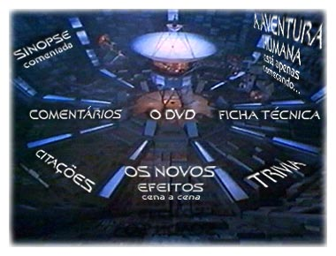

Guia de episdios
STAR TREK: THE MOTION PICTURE 1979
Saiba tudo que h para saber sobre a verso definitiva do primeiro filme de Jornada nas Estrelas para cinema, que abriu as portas do mundo da stima arte tripulao da Enterprise
Por Luiz Castanheira Luiz Felipe Tavares Salvador Nogueira
